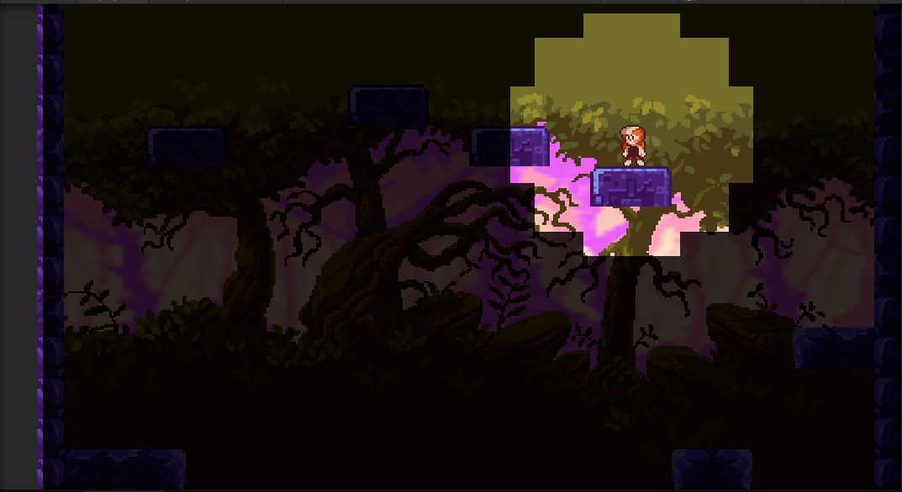

🎮 점프킹 스타일 게임 개발
2025-05-27
현재 Unity를 이용해 점프킹(Jump King) 스타일의 2D 점프 액션 게임을 개발 중입니다. 이 프로젝트는 단순한 점프 메커니즘을 기반으로 하되, 정밀한 입력과 실수를 용납하지 않는 점프 특성을 재현하는 데 집중하고 있습니다.
주요 기능
- ✔️ 점프 세기 조절 (키 누르는 시간에 따라)
- ✔️ 낙하 시 체크포인트 복귀
- ✔️ 체크포인트 자동 저장
- ✔️ 파티클과 효과음 추가
- 🚧 상위 맵으로의 진행 애니메이션 구현 중
사용 기술
- Unity
- 2D Rigidbody & Physics
- C# (MonoBehaviour 구조화)
진행 상태
현재 플레이 가능한 프로토타입까지 구현이 완료되었으며, 점프력 보정과 체크포인트 회귀 기능을 테스트 중입니다. 추후 부족한 맵을 추가해 나갈 예정입니다.
🎮 플레이 사진
※ 실제 개발 중인 Jump King 스타일 게임의 플레이 장면입니다.